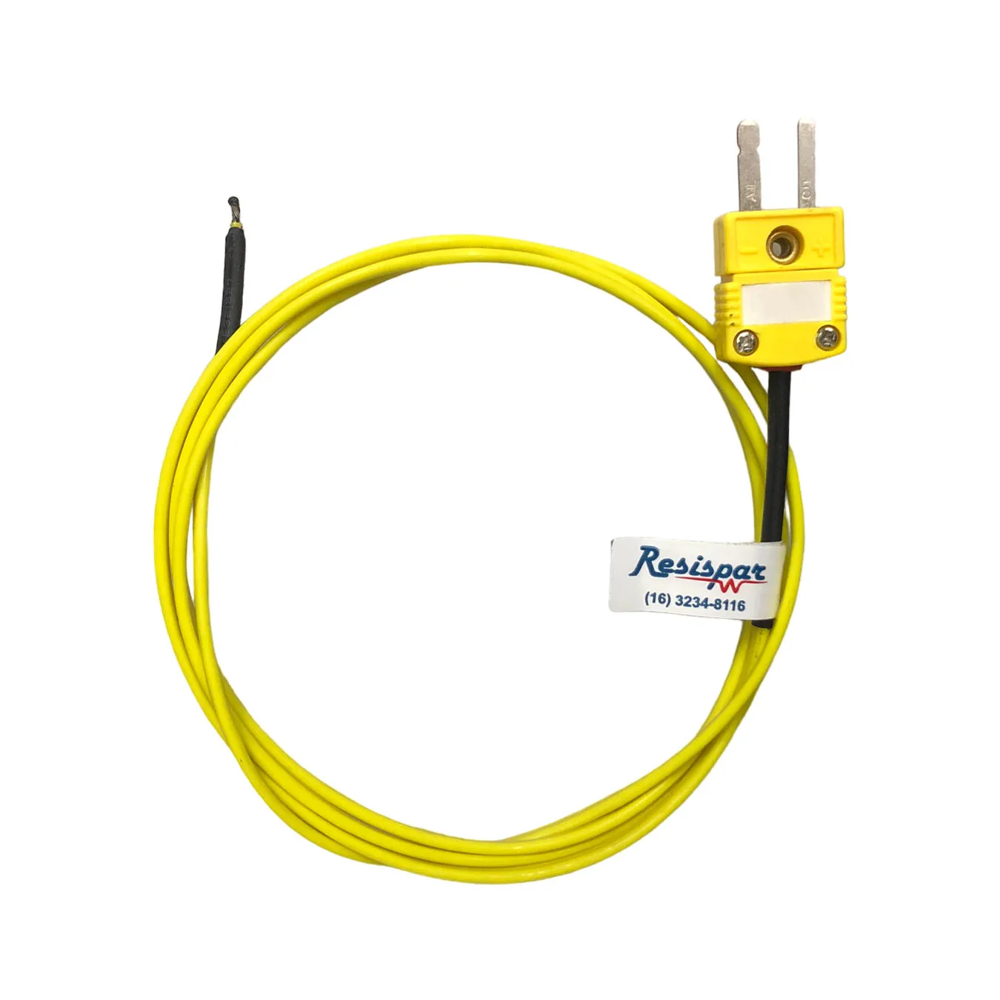
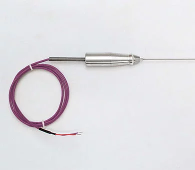
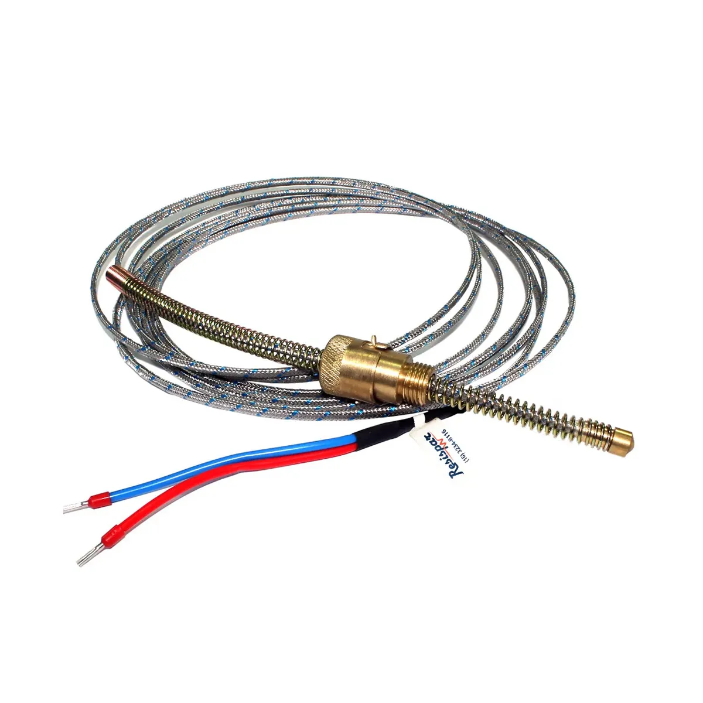
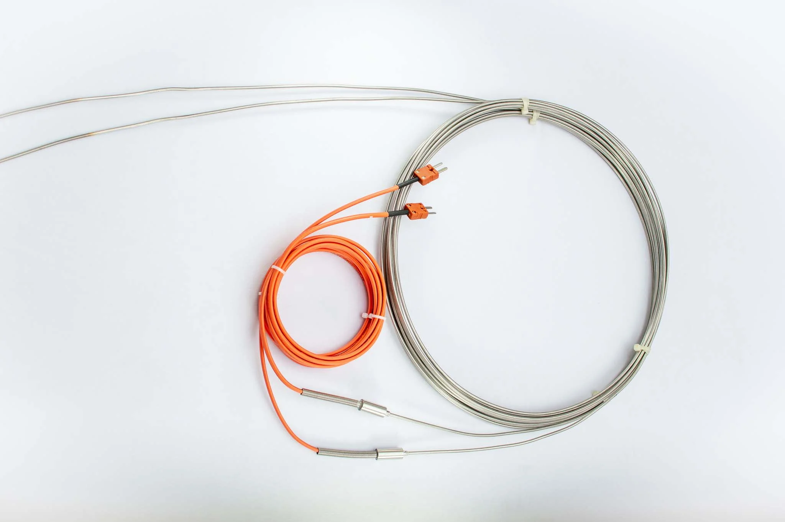

TERMOPAR K(CROMEL/ALUMEL)
O termopar tipo K é um termopar de uso constante, tendo um baixo custo e, devido à sua popularidade estão disponíveis variadas sondas. Eles têm sua faixa de medição de temperatura entre os -200 e os 1200°C, tendo assim uma sensibilidade de aproximadamente 41µV/°C. Ele é formado por dois fios metálicos diferentes: o Cromel (níquel-cromo), que é o pólo positivo, e o Alumel(níquel-alumínio com manganês e silício), que é o polo negativo. Quando há diferença de temperatura entre as extremidades, ocorre o efeito Seebeck, gerando uma tensão elétrica proporcional à temperatura, permitindo sua medição.

termopar E(CROMEL/CONSTANTAN)
Este termopar é do tipo E e apresenta elevada sensibilidade, em torno de 68 µV/°C, sendo um dos termopares mais sensíveis disponíveis. Essa característica o torna bastante adequado para medições de baixas temperaturas e para aplicações que exigem a detecção de pequenas variações térmicas com maior precisão. O termopar tipo E é formado pela junção de dois metais diferentes: níquel-cromo (polo positivo) e uma liga de níquel-cromo-silício (polo negativo), conhecida comercialmente como Constantan modificado. A diferença de propriedades elétricas entre esses materiais gera uma tensão quando há variação de temperatura, fenômeno conhecido como efeito termoelétrico. Além disso, o tipo E se destaca por sua alta sensibilidade, boa estabilidade e excelente desempenho em temperaturas mais baixas, sendo bastante utilizado em medições industriais, laboratoriais e em sistemas que exigem maior precisão. Sua faixa típica de operação vai aproximadamente de -200 °C até 900 °C, sendo mais limitado que outros tipos em temperaturas muito elevadas, mas superior em sensibilidade.

termopar j(FERRO/CONSTANTAN)
O termopar tipo J possui uma faixa de operação limitada entre -40 °C e 750 °C, o que reduz sua popularidade em comparação ao tipo K. Ele ainda é utilizado principalmente em equipamentos antigos que não são compatíveis com sensores mais modernos. Quando exposto a temperaturas acima de 760 °C, ocorre uma transformação magnética no material, causando perda de calibração e comprometendo a precisão das medições.

termopar N (NICROSIL/NISIL)
O termopar tipo N é um sensor de temperatura desenvolvido para oferecer maior estabilidade e resistência em comparação com os termopares mais tradicionais, como os tipos K e J. Ele foi projetado especialmente para aplicações em altas temperaturas e ambientes mais agressivos, onde há presença de oxidação. Esse termopar é formado pela junção de duas ligas metálicas específicas: Nicrosil (níquel-cromo-silício) como polo positivo e Nisil (níquel-silício-magnésio) como polo negativo. Essas ligas foram desenvolvidas para reduzir problemas comuns em outros termopares, como a degradação do sinal ao longo do tempo devido à oxidação. O tipo N apresenta uma sensibilidade moderada, em torno de 39 µV/°C, menor que a do tipo E, mas suficiente para medições confiáveis. Sua principal vantagem não é a sensibilidade, e sim a estabilidade térmica e a durabilidade, especialmente em temperaturas elevadas. Sua faixa típica de operação varia aproximadamente de -200 °C até 1300 °C, podendo ser utilizado em fornos industriais, turbinas, processos metalúrgicos e outras aplicações que exigem medições em altas temperaturas com boa confiabilidade ao longo do tempo. Entre suas principais vantagens estão a alta resistência à oxidação, boa estabilidade a longo prazo e menor erro de leitura em ambientes severos. Como desvantagem, pode-se citar o custo um pouco mais elevado e a menor sensibilidade em comparação com alguns outros tipos de termopares.

termopar tipo b
Os termopares tipo B, R e S são altamente estáveis e indicados para medições em altas temperaturas, podendo atingir até 1800 °C. No entanto, apresentam baixa sensibilidade (cerca de 10 µV/°C), o que reduz sua resolução e limita seu uso a temperaturas acima de 300 °C. Uma característica particular desses termopares é que produzem a mesma tensão entre 0 °C e 42 °C, impossibilitando medições confiáveis abaixo de 50 °C. Como vantagem, permitem o uso de cabos de cobre comum nas conexões dentro dessa faixa, ao contrário de outros termopares, que exigem cabos do mesmo material para evitar erros de medição.